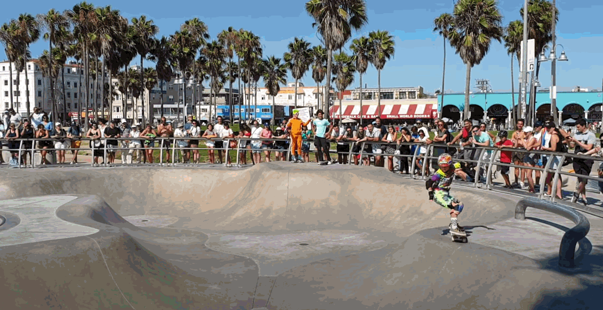

Point Processing Methods
Warmth -2 2
Brightness -2 2
Contrast -2 2
Non-Linear Contrast -2 2
Minification texture filtering options
Currently chosen: Nearest-neightbor mipmapped
Magnification texture filtering options
Currently chosen: Nearest-neighbor
Other
